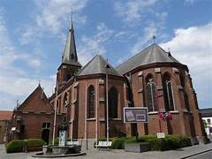

Enkele weetjes
- Meulebeke is een gemeente in de Belgische provincie West-Vlaanderen.
- Op 1 januari 2006 telde Meulebeke in totaal 10.980 inwoners.
- De totale oppervlakte bedraagt 29,35 km².
- De huidige burgemeester is Dirk Verwilst.
- Meulebeke is de geboortestad van Karel van Mander, schilder en vroege kunsthistoricus.
Sint-Amanduskerk

De Sint-Amanduskerk is een rooms-katholieke kerk aan de Markt in de West-Vlaamse plaats Meulebeke. Anno 2021 valt de kerk onder de eenheid/federatie PE Elisabet Meulebeke.
Wellicht was hier in de zevende eeuw al een bidplaats. Het huidige neogotische gebouw is opgetrokken tussen 1893 en 1896. De kerk is ten minste twee keer in andere stijl herbouwd en de oudste fundamenten dateren uit omstreeks 1100.
Het Vlaams Instituut voor het Onroerend Erfgoed vermoedt dat er uit kruisende verbindingswegen een dorpsplein ontstaan kan zijn, waaraan in de zevende eeuw van hout en leem een bidplaats gebouwd is.
Omstreeks 1100 wordt de eerste stenen kerk gebouwd, een Romaanse hallenkerk met vieringtoren. Blijkens een schenking uit 1163 van bisschop Geraldus van Doornik blijkt dat de kerk dan al, en dus waarschijnlijk sinds de bouw, is gewijd aan Sint-Amandus. De kerk ontkomt in 1566 aan de Beeldenstorm en met hulp uit naburige dorpen worden in 1572 de geuzen verjaagd. Toch wordt het interieur in de daaropvolgende jaren vernield door rondtrekkende geuzen. Op 27 september 1645 wordt de kerk door het Franse leger in brand gestoken. Tot aan 1715 wordt herstelwerk uitgevoerd.
In 1715 wordt Jacobus Mys pastoor van de kerk en hij laat de kerk in barokstijl, met een kleine toren, herbouwen door Guillaume Nolf. Daarbij wordt de sacristie afgebroken die in 1709, nog maar enkele jaren tevoren, gebouwd was. Na de Eerste Coalitieoorlog wordt het gebied door Frankrijk geannexeerd en in 1797 wordt de kerk door de Franse bezetter gesloten, maar in 1802 wordt zij weer in gebruik genomen.
In 1892 valt het besluit om de kerk opnieuw te herbouwen en uit te breiden. Architect en bouwheer Jules Soete uit Roeselare ontwerpt een neogotische hallenkerk die na een openbare aanbesteding gerealiseerd wordt door Declerq Désiré De bouw duurt van 1893 tot 1896. De vernieuwde kerk wordt op 12 juli voltooid en is 53 meter lang en 22.60 meter breed. De nieuwe naaldtoren is veel groter dan de oude, zo'n 60 meter hoog, met daarop een smeedijzeren kruis. Dat staat boven op een wereldbol in verguld koper met een dito windhaan. De kerk is ingewijd op 21 september 1896, door de Brugse bisschop Gustavus Josephus Waffelaert.
Tijdens de Eerste Wereldoorlog werd er twee maal schade berokkend aan de kerk. Een eerste maal op 7 oktober 1917, bij de roof van haar drie klokken, en een tweede maal op 17 en 18 oktober 1918 tijdens de terugtrekking van de Duitsers. Tijdens die beschieting was de toren het mikpunt van de Duitse artillerie en kregen ook de oost- en zuidflanken van de torenkuip harde klappen. Sporen van inslag van granaten en obussen waren overal merkbaar zowel op de vloer en muren als op de kerkmeubels. De herstellingen werden betaald door de Dienst voor Vereffening der Oorlogsschade.
Tijdens de Tweede Wereldoorlog lag Meulebeke in de vuurlinie op 26 mei 1940, de dag voor de capitulatie. In het noorden over de spoorlijn teruggetrokken, lag het kamp van de Belgen die Meulebeke bestookte waar de Duitsers uit het zuiden waren binnengevallen. Het gevecht duurde tot 27 mei, de dag van capitulatie. De schade was terug heel groot, in de noordzijde van de toren hadden de Duitsers een grote opening gemaakt om van daaruit de Belgen onder vuur te nemen. In omgekeerde richting waren op de kerk ook verschillende voltreffers gekomen: één op het dak van de middenbeuk; één op het dak van de Sint-Amandusbeuk; drie tegen de noordmuur van de O.L. Vrouwebeuk en ook drie tegen de noordkant van de torenkuip. Aan de toren was er grote schade aan het uurwerk, de trappen, ladders en aan de zoldering. Ook de brandramen, het meubilair en de kruisweg moesten er aan geloven. De kerk was dan ook voor enkele dagen niet toegankelijk tot de eerste herstellingswerken waren uitgevoerd. Het volledig herstel kostte kostte 149.362 Fr. Op 28 juni 1943 werden twee van de drie kerkklokken in beslag genomen door de Duitsers. Het jaar daarop besloot de kerkraad om de veertien staties van de kruisweg naar een veilige schuilkelder over te plaatsen. Samen met het kerkarchief uit de sacristie en pastorie.
In 1962 en 1963 werd de kerk terug hersteld en vernieuwd, deze keer onder leiding van pastoor Lernout.
OC Vondel
De brouwerij bestond al in de eerste helft van de negentiende eeuw. In 1901 kocht borstelfabrikant Camiel Vande Vondele het pand en breidde het uit. Hij vestigde er eerst een borstelfabriek, maar ging al snel over op bierbrouwen. In 1922 werd Brouwerij Vondel als vennootschap opgericht. De naam verwijst zowel naar de oprichter, als naar de Nederlandse dichter Joost van den Vondel, wiens kop op alle publiciteit prijkt. Na het overlijden van Vande Vondele in 1929 kwam de meerderheid van de aandelen in handen van de familie Laurens. De brouwerij werd in de jaren dertig afgebroken en vervangen door een nieuw gebouw in art-deco-stijl.
In de brouwerij werd Vondel gebrouwen, een Vlaams roodbruin bier uit dezelfde familie als Rodenbach van de gelijknamige brouwerij uit Roeselare. Daarnaast was er ook Lucifer, destijds een amberkleurig bier, genoemd naar het bekende werk van Vondel. Op het hoogtepunt van de brouwerij, rond 1950, werden er 35 arbeiders tewerkgesteld.
Bij de leiding van de brouwerij bestond een grote aversie tegen de concurrent Rodenbach. Brouwerij Artois kocht in 1957 de aandelen, en verkocht ze onmiddellijk door aan Rodenbach, die in ruil voortaan ook Stella verdeelde. Rodenbach stelde onmiddellijk een nieuwe beheerraad aan.
Nog tot begin jaren zeventig werd er hier gebrouwen. De merken Vondel en Lucifer werden doorverkocht aan Brouwerij Riva uit Dentergem.
De gemeente Meulebeke kocht in 1976 de leegstaande gebouwen aan. In 1989 werd er het Ontmoetingscentrum Vondel geopend. In de vroegere ketelruimtes werd in 1999 de bibliotheek ingericht. Andere ruimtes dienen voor jeugdverenigingen en buitenschoolse kinderopvang.
Openingsuren
- Maandag van 8:00u tot 12:00u en van 13:30u tot 17:00u
- Dinsdag van 8:00u tot 12:00u en van 13:30u tot 17:00u
- Woensdag van 8:00u tot 12:00u en van 13:30u tot 17:00u
- Donderdag van 8:00u tot 12:00u en van 13:30u tot 17:00u
- Vrijdag van 8:00u tot 12:00u en van 13:30u tot 15:30u
- Zaterdag gesloten
- Zondag gesloten